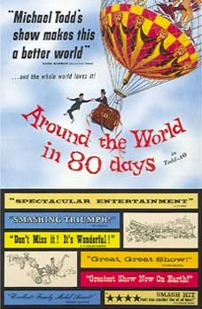

THE STANFORD THEATRE
Now Showing
·
Upcoming
·
Past
·
Search
October 9 - December 26, 2009
20th Anniversary Festival
34 bills
October 9 - 10
The Big Sleep (1946)
114 min
Laura (1944)
88 min
October 11 - 12

Around the World in Eighty Days (1956)
184 min
October 13 - 15
The African Queen (1951)
105 min
To Have and Have Not (1944)
96 min
October 16 - 17
The Apartment (1960)
125 min
Some Like It Hot (1959)
120 min
October 18 - 19
Mr. Smith Goes to Washington (1939)
129 min
The Man Who Knew Too Much (1956)
120 min
October 20 - 22
Arsenic and Old Lace (1944)
118 min
His Girl Friday (1940)
90 min
October 23 - 24
An Affair to Remember (1957)
119 min
Bringing Up Baby (1938)
102 min
October 25 - 26
It Happened One Night (1934)
105 min
Midnight (1939)
92 min
October 27 - 29
Holiday (1938)
92 min
It Should Happen to You (1954)
86 min
October 30 - 31
The Adventures of Robin Hood (1938)
102 min
Singin' in the Rain (1952)
103 min
November 1 - 2
Lost Horizon (1937)
97 min
Random Harvest (1942)
125 min
November 3 - 5
The Bad and the Beautiful (1952)
116 min
Sunset Boulevard (1950)
110 min
November 6 - 7
Breakfast at Tiffany's (1961)
110 min
Charade (1963)
113 min
November 8 - 9
The Ghost and Mrs. Muir (1947)
104 min
Topper (1937)
95 min
November 10 - 12
To Be or Not to Be (1942)
93 min
Ninotchka (1939)
110 min
November 13 - 14
The Maltese Falcon (1941)
101 min
Citizen Kane (1941)
119 min
November 15 - 16
The Prisoner of Zenda (1937)
101 min
The Mark of Zorro (1940)
94 min
November 17 - 19
Foreign Correspondent (1940)
115 min
Beat the Devil (1953)
89 min
November 20 - 21
Top Hat (1935)
101 min
The Gay Divorcee (1934)
107 min
November 22 - 23
Yankee Doodle Dandy (1942)
126 min
Swing Time (1936)
103 min
November 24 - 26
My Man Godfrey (1936)
94 min
The Thin Man (1934)
91 min
November 27 - 28
North by Northwest (1959)
136 min
To Catch a Thief (1955)
106 min
November 29 - 30
Three Coins in the Fountain (1954)
102 min
Love in the Afternoon (1957)
130 min
December 1 - 3
All About Eve (1950)
138 min
Double Indemnity (1944)
107 min
December 4 - 5
Gigi (1958)
119 min
The Reluctant Debutante (1958)
94 min
December 6 - 7
An American in Paris (1951)
108 min
Father of the Bride (1950)
92 min
December 8 - 10
Meet Me in St. Louis (1944)
113 min
The Wizard of Oz (1939)
102 min
December 11 - 12
Roman Holiday (1953)
118 min
Sabrina (1954)
113 min
December 13 - 14
My Fair Lady (1964)
171 min
December 15 - 17
Funny Face (1957)
103 min
The Band Wagon (1953)
113 min
December 18 - 19
Casablanca (1942)
102 min
The Philadelphia Story (1940)
108 min
December 20 - 23
The Shop Around the Corner (1940)
99 min
Miracle on 34th Street (1947)
96 min
December 24
It's a Wonderful Life (1946)
125 min
December 25 - 26
Gone With the Wind (1939)
238 min